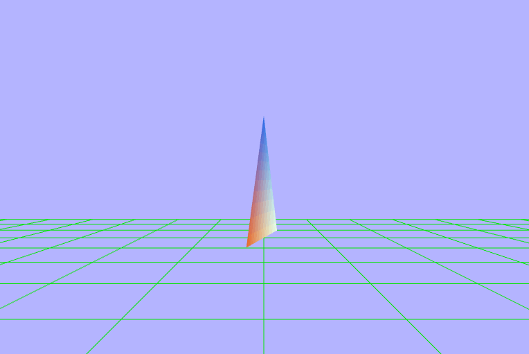
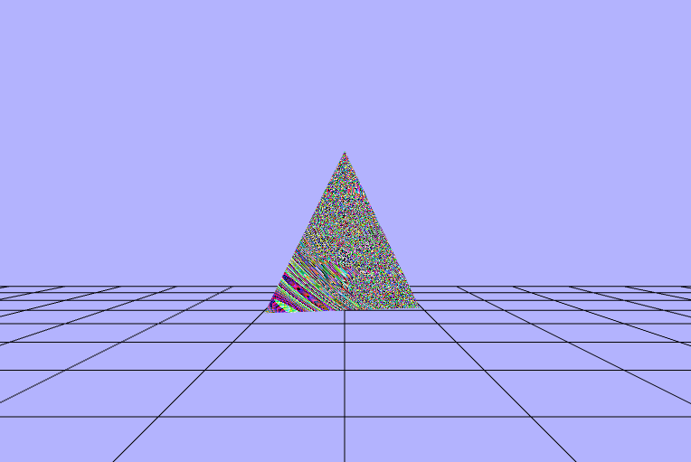

The Rasterization Pipeline
Now that we have an understanding of why we want to use rasterizatrion, let's examine what the pipeline
is. All of the images on the screen come down to pixels which can be filled with a single color. So how
do we represent $2D$ and even $3D$ shapes on the screen? We use what are called polygon meshes. Polygon
meshes are big compilations of conjoined polygons. The polygons can have any number of sides: triangle,
rectangle, octogon, but the best one to use is the triangle. This is because triangles contain a few very
helpful charactersitics. The most important of which is that they are ALWAYS guaranteed to be
planar which means that for any triangle that exists, it does so entirenly within a singular
plane. A nice consequence of being planar is that it is very easy to interpolate a color across a triangle
because it only need to be interpolated within the plane that the triangle lives. These meshes can change
the definition/quality by adding or removing more triangles (an subsequently resizing them). But, it does
come at a cost of rendering time, so many techniques have been developed to allow only pieces of
scenes to be rendered with high fidelity meshes by forms of culling. One of which will only render the part
of a mesh that is visible, similar to how movie sets are built with facades.
Triangle Meshes

The graphics api really only needs to know about the verticies of these triangles, and each vertex will
often contain more information that just spatial coordiantes, like coloring details. So to render an
image on the screen we need to tell the hardware vertex information. Each vertex can be seen as a sample
of the values for a give location, and the surfaces created between these vertecies are all approximations.
The way that we are going to define these meshes is by a list of verticies (as decribed above) and a list
of triplets of vertex indicies (from the list of vertexes) that relay how and in which direction each vertex
is connected. Now that we know how to represent our objects let's take a (very) high view look at the
pipeline itself.
The Rasteization Pipeline

The Application Stage
The application stage is the part where the program is running on the CPU. This stage contains thing like
staging/preparing the data. This stage is also under full control of the developer, so any changes they
want can be made here, and it is often a source improving performance by optimzing things like memory
allocations. The most important job during this point is to prepare and submit the geometry (to the GPU)
for rendering.
The Geometry Stage
The geometry stage is the point in the pipeline where per-vertex and per-primative (tirangle) operations
happen.
Geometry Processing

The first thing that needs to happen is that all of the geometry in the scene needs to be transformed
into multiple different coordinate systems. We will start with individual objects in their own object spaces
where the origin can be anywhere but is almost always somewhere useful to whomever made the model. For
something like a person it might be at the bottom of their foot to make it easy to place them on the ground.
Then every model is taken into world space by multiplying it's coordinates by the world matrix, and in world
space the origin is now set in the center of the scene. Then every object (now in world space) needs to be
transformed so is is relative to the camera or view point. The camera is basically another object sitting
anywhere in world space but by multiplying each object in world space by the inverse of the camera's world
matrix, we can now see the scene with our camera set as the origin in what's called view space.
Vertex Shading
After we have our scene represented in the view space, it's time for the GPU to start with the vertex
shading. Vertex shading is where the main vertex processing occurs, and it is where the transformation
between coordinate spces would actually happen.
Projection and Clipping
Projection will take the $3D$ representation of the view space and map it down to a $2D$ representation.
This can be done with multiple types of projections, but later in the coding part we'll be using perspective
projection which will cause previously parallel lines to no longer be parallel and seemingly approach a
single point, causing perspective (which is a more realistic way of looking at stuff than orthographic
which preserves parallel lines). It will place everything withing a viewing frustum, or box, and then have
every cooridate divided by the homogeneous coordinate $w$ to get the entire view volume to be within the
range of $[-1,\ 1]$ along each axis also know as normalized device coordiantes. What happens to objects that
are not entirely inside or outide of the viewing volume? Something called clipping is performed which
creates new triangles by creating verticies at the edges and connecting them to primitives partially within
the box. This way the hardware knows exactly how to render every primitive that can be seen.
Screen Mapping
After our scene has been clipped into a nice unit-cube, it is ready to translated into screen coordiantes.
The entire view volume is expanded from the range for $x$ and $y$ vaues of $[-1,\ 1]$ to the size of
the viewport also know as screen space. Every $(x,\ y)$ coordinate pair is now the position of a pixel
on the screen.
Rasterization
Rasterization is the ending piece of the piepline where each of the primatives is broken down into
individual fragments and colored. It begins by taking in the primatives (triangles) and then determining
which pixels are covered by each one. The shaded value is then interpolated based on the position within
the triangle and the values from each vertex.
Triangle Traversal

After the primatives have been rastered into fragments, the fragments are then shaded. Fragment shading
is the point in the pipeline where per-fragment operations occur, and it is where the color is added to
each fragment. According to OpenGL terminology, this stage is called fragment shading instead of pixel
shading because each fragment is not guaranteed to correspond to an individual pixel. Then the interpolated
colors are passed to the color buffer and then to the frame buffer and then to the screen for drawing.
Pipeline Overview

Programming with WebGL
WebGL is a graphics API that allows us to interact with our GPU using javascript. It is built on top of
the famous OpenGL ES (embedded systems) and GLSL (shader language). It is what is known as an
immediate-mode rendering API. That basically means that the application issues all drawing commands for
the entire scene each time a new frame is drawn; this allows a lot of control within the application
program itself. A WebGL context is a state machine, so once an attribute is modified, it will remain
that way until modified again. The way that we can interact with the graphics API is thru the html
element <canvas> using a webgl context which looks something like the following,
and it is where our coding journey begins.
// get a reference to the canavs element from the DOM
let canvas = document.getElementById("my-canvas");
// set the context to webgl
let gl = canvas.getContext("webgl");
Once we have that reference, we can start to render the scene. For this assignment the starter code I
got went a long way, and setup both the vertex and fragment shaders, compiled and attached them to
the WebGL context, setup some global reference variables, set the rendering function with the a
background to a blue-ish color, and setup some scaffolding for the coming triangle and line geometries.
Setting the Vewport Dimensions
Within our updateAndFunction is where we want to, well, render stuff, so this is where we'll want to
set the size of the drawing space. We can do this using the dimensions of the canvas, and we might
as well just take up the entire thing. One thing to note is that the gl reference can have arbitrary
attributes attached to it, so it is a convenient place to store the width/height of the canvas
without having to pass around both references. Note this function is also where the bacground color
is being set to that blue-ish color via the gl.clear.
// set the viewport to be te entire size of the canvas
gl.viewport(0, // x coord of lower left corner
0, // y coord of lower left corner
gl.canvasWidth, // width
gl.canvasHeight); // height
// set the background color
// set the gl color buffer attribute to the predefined color
// each value between 0 and 1
gl.clearColor(red, blue, green, alpha);
// actually reset the color buffer (and depth buffer)
gl.clear(gl.COLOR_BUFFER_BIT | gl.DEPTH_BUFFER_BIT);
Attaching the Shaders
Next we need to get the code for both the fragment and vertex shaders as text. We can do this
similarly to how we got a reference to the canvas by using th DOM. Once we have the text we need to
compile each of them. Once we've compiled all of our shaders, we need to create a shader program and link
it to the WebGL context for the GPU to have access to them. Doing this still hasn't changed the scene
at all since we are not drawing any geometry, so we still have that blue-ish square taking up the canvas.
// get and compile the vertex shader
let vertexShaderText = document.getElementById("my-vertex-shader").textContent;
let vertexShader = gl.createShader(gl.VERTEX_SHADER);
gl.shaderSource(vertexShader, vertexShaderText);
gl.compileShader(vertexShader);
// get and compile the fragment shader
let fragmentShaderText = document.getElementById("my-vertex-shader").textContent;
let fragmentShader = gl.createShader(gl.VERTEX_SHADER);
gl.shaderSource(fragmentShader, fragmentShaderText);
gl.compileShader(fragmentShader);
// create a gl "program" to hold our compiled shaders
let shaderProgram = gl.createProgram();
// attach the shaders
gl.attachShader(shaderProgram, vertexShader);
gl.attachShader(shaderProgram, vertexShader);
// link the shader program so gl (and the GPU) can use it
gl.linkProgram(shaderProgram);
Adding a Triangle
Now it's time to add a triangle to the middle of our scene. We can do this by setting the view point
at a fixed position at the origin, and translating the triangle away from it. Then we can do a
perspective projection on the triangle get it into clip space so that we can see it. It is super
important to keep in mind that due to the right-hand rule $+z$ is coming out of the screen, so
our displacement here should be in the $-z$ direction.
// move the triangle 7 units infront of the camera
triangleGeometry.worldMatrix.makeIdentity().makeTranslation(0, 0, -7);
// project the triangle
// not that the projection matrix is global and not specific to the triangle
projectionMatrix.makePerspective(45, // vertical fov
gl.canvasWidth / gl.canvasHeight, // aspect ratio
0.1, // near plane distance
1000); // far plane distance
// send the matricies to the shader using the transpose of the elements
// since the GPUs like to have the elements ordered as column vectors for
// performance reasons
gl.uniformMatrix4fv(shaderProgram.worldMatrixUniform,
false,
triangleGeometry.worldMatrix.clone().transpose().elements);
// repeat the above with the viewMatrix and projection matrix
Adding Some Color
Now that we have the geometry for the triangle setup, lets color that thing. The first thing we need to
do to is to create and bind a color buffer which is something I didn't mention earlier when talking
about the verticies. In order to allocated some space in VRAM (memory on the graphics card), we need to
create a buffer, set it up in a javascript Float32Array, bind the buffer, and then pass the data over to
the video card. The color buffer for the triangle is an array of 3 colors (3 triplets; 9 floats) that
correspond to each vertex in the triangle. Each triplet is compsed of 3 floats from 0 to 1 that represent
a value for the Red, Green, and Blue channels respectively.
// 1. create color buffer
// allocating space in VRAM
let newColorBuffer = gl.createBuffer();
// 2. bind color buffer
gl.bindBuffer(gl.ARRAY_BUFFER, newColorBuffer);
// 3. create color array
let colors = [
1.0, 0.0, 0.0, // red
0.0, 1.0, 0.0, // green
0.0, 1.0, 0.0, // green
];
// 4. "buffer" color data
// copy the buffer from RAM to VRAM
gl.bufferData(gl.ARRAY_BUFFER, new Float32Array(colors), gl.STATIC_DRAW);
// 5. store a reference to the color buffer on the triangleGeometry object
triangleGeometry.colorBuffer = newColorBuffer;
Next we need to add a new attribute to the vertex shader to handle the color as well as a new varying
to both the vertex and fragment shaders. What do attribute and varying mean? Well, an attribute is
a piece of information that is only available in the Vertex shader, and a varying variable is
a variable that is passed as output of the vertex shader and as input to the fragment shader. Varying
variables have values accessable in both types of shaders. Since the fragment shader we were given
already has the varying color, we just need to take care of the vertex shader for now.
Vertex Shader
attribute vec3 aVertexColor;
...
varying vec3 vColor;
void main(void) {
...
vColor = aVertexColor;
}
Next we need to get a reference to the color shader attribute, and then bind the color buffer to
the attribute. We can get the attribute and attach the reference to the shaderProgram and then
enable it for use.
// Get a reference to the color attribute variable in the vertex shader and enable it
shaderProgram.vertexColorAttribute = gl.getAttribLocation(shaderProgram, "aVertexColor");
gl.enableVertexAttribArray(shaderProgram.vertexColorAttribute);
// bind the color buffer for use in the shader program
gl.bindBuffer(gl.ARRAY_BUFFER, triangleGeometry.colorBuffer);
triangleGeometry.shaderProgram.vertexColorAttribute,
3, // number of verticies
gl.FLOAT, // type
gl.FALSE, // normalized?
0, // stride (no idea what this does)
0, // offset from first compoenent in the attribute array
);
A nice Colored Triangle

Rotating the Triangle
In order to rotate the triangle, we just need to apply a rotation around the $y-axis$, but we need to make
sure that the rotation is applied after the transation so that the triangle is rotating about its center
and not the world origin at a distance of 7 units. The way we can roate the triangle is by using the time
elapsed since the program has sarted running which will be passed in as an argument to the updateAndRender
function. From there we need to make sure it's a number (since at the very beginning it
seems to be undefined) then convert it to seconds from miliseconds and we can use that to find the
degrees to rotate.
function updateAndRender(s) {
time.secondsElapsedSinceStart = !isNaN(s) ? s / 1000 : 0;
...
// calculate the number of degrees we should have rotated given how much time has elapsed
// 60 degrees per second
var degrees = time.secondsElapsedSinceStart * 60;
...
// setup the rotation
let triangleRot = new Matrix4().makeRotationY(degrees);
...
// combine the rotation with the translation
let triangleTransl = new Matrix4().makeTranslation(0, 0, -7);
triangleGeometry.worldMatrix = triangleTransl.multiply(triangleRot);
}
??? Turns out my projection matrix wasn't quite right
Waaaay too fast. Forgot to covert the time from
miliseconds to seconds
Adding a Grid Line Plane
As of right now we have a singular spinning triangle set in space somewhere on a blue-ish background, but
we don't have any other sense of where we are and we have no real sense of direction. How can we make it
easier to visualize the space of the WebGL context? We can add a plane beneath the triangle made up of
grid lines. One super important thing to keep in mind now is that we need to display objects based on
their distance to the camera; in other words, we only want to see the closest object to us (since
everything is opaque). To do this we need to enable the depth test to compare the $z-coordinates$ of
each vertex, and this will allow the grid to be displayed behind/below the triangle. First let's start by
defining the verticies to decribe the lines. Note that we are setting the $y-value$ of each coordinate
to $-1$ since that is how far down the unit cube goes, and it will make sure that the tirangle is above the
lines.
var linePositions = [];
// specify the horizontal lines
for (var i = -10; i <= 10; ++i) {
// add position for line start point (x value should be i
linePositions.push(i, -1, 10);
// add position for line end point (x value should be i)
linePositions.push(i, -1, -10);
}
// specify the lateral lines
for (var i = -10; i <= 10; ++i) {
// add position for line start point (z value should be i)
linePositions.push(-10, -1, i);
// add position for line end point (z value should be i)
linePositions.push(10, -1, i);
}
After creating the verticies in $linePositions$ array which is bound an then enabled to the gl context,
we need to project the line grid into our scene the same way we did the triangle, and we end up
with the following scene.
Adventures in (Fragment) Shading
Ok, so to be completely honest I don't exactly undersand what's going on here, but here's my attempts
to animate the colors based on the elapsed time. Also a quick note that I was sending the degrees
(time elasped/ 60) to the fragment shader on accident instead of just the time elapsed. Below are
the variables as defined in my fragment shader.
P.S.: Sorry they're listed one at a time I couldn't get the styling to display the vectors properly
when I had 2 to a row.
// setting floating point precision
precision mediump float;
// time elasped since program start (t/60)
uniform float uTime;
// vertex color and positions
varying vec3 vColor;
varying vec3 vPosition;
// vertex color and positions
varying vec3 vColor;
varying vec3 vPosition;
void main(void) {
float _rads = radians(uTime);
float _dot = dot(vColor, vPosition);
// Not sure these really have any meaning
// but I was having fun :)
vec3 _cross_cp = cross(vColor, vPosition);
vec3 _cross_pc = cross(vPosition, vColor);
// we send a value of 1.0 as the 4th element to the alpha channel
// meaning fully opaque
gl_FragColor = vec4(vec3-above-each-img, 1.0)
}
$\begin{pmatrix}
cos(uTime) \\
cos(uTime) \\
cos(uTime)
\end{pmatrix}$
$\begin{pmatrix}
cos(vColor.x\ +\ uTime) \\
sin(vColor.y\ +\ uTime) \\
cos(vColor.z\ +\ uTime)
\end{pmatrix}$

$\begin{pmatrix}
cos(vColor.x) \\
sin(vColor.y) \\
cos(vColor.z)
\end{pmatrix}$

$\begin{pmatrix}
cos(\_rads) \\
sin(\_rads) \\
cos(\_rads)
\end{pmatrix}$
$\begin{pmatrix}
fract(\_rads) \\
fract(\_rads) \\
fract(\_rads)
\end{pmatrix}$
$\begin{pmatrix}
fract(uTime) \\
fract(uTime) \\
fract(uTime)
\end{pmatrix}$
$\begin{pmatrix}
cos(fract(uTime)) \\
fract(sin(\_rads)) \\
cos(fract(uTime))
\end{pmatrix}$
$\begin{pmatrix}
sin(vColor.x\ +\ sin(uTime)) \\
cos(vColor.y\ +\ cos(uTime)) \\
sin(vColor.z\ +\ fract(uTime))
\end{pmatrix}$
$\begin{pmatrix}
sin(vColor.x\ +\ \_rads) \\
cos(vColor.y\ +\ \_rads) \\
sin(vColor.z\ +\ \_rads)
\end{pmatrix}$
$\begin{pmatrix}
fract(vColor.x\ +\ \_rads) \\
fract(vColor.y\ +\ \_rads) \\
fract(vColor.z\ +\ \_rads)
\end{pmatrix}$
$\begin{pmatrix}
fract(vColor.x\ +\ sin(uTime)) \\
fract(vColor.y\ +\ fract(uTime)) \\
fract(vColor.z\ +\ cos(uTime))
\end{pmatrix}$
$\begin{pmatrix}
fract(vColor.x)\ +\ sin(\_rads) \\
fract(vColor.y)\ +\ sin(\_rads) \\
fract(vColor.z)\ +\ sin(\_rads)
\end{pmatrix}$
$\begin{pmatrix}
fract(sin(vColor.x\ +\ sin(\_rads))) \\
fract(sin(vColor.y\ +\ sin(\_rads))) \\
fract(sin(vColor.z\ +\ sin(\_rads)))
\end{pmatrix}$
$\begin{pmatrix}
fract(vColor.x\ +\ 0.2\ +\ sin(\_rads)) \\
fract(vColor.y\ -\ 0.3\ +\ fract(uTime)) \\
fract(vColor.z\ *\ 0.32\ +\ cos(\_rads))
\end{pmatrix}$
$\begin{pmatrix}
fract(vColor.x\ *\ \_dot\ +\ sin(\_rads)) \\
fract(vColor.y\ *\ \_dot\ +\ sin(\_rads)) \\
fract(vColor.z\ *\ \_dot\ +\ sin(\_rads))
\end{pmatrix}$
$\begin{pmatrix}
fract(vPosition.x\ *\ \_dot\ +\ sin(\_rads)) \\
fract(vPosition.y\ *\ \_dot\ +\ sin(\_rads)) \\
fract(vPosition.z\ *\ \_dot\ +\ sin(\_rads))
\end{pmatrix}$

$\begin{pmatrix}
fract(vColor.x\ +\ \_dot\ +\ cos(\_rads)) \\
fract(vColor.y\ +\ \_dot\ +\ cos(\_rads)) \\
fract(vColor.z\ +\ \_dot\ +\ cos(\_rads))
\end{pmatrix}$
$\begin{pmatrix}
fract(\frac{vColor.x}{\_dot}\ -\ uTime) \\
fract(\frac{vColor.y}{\_dot}\ -\ uTime) \\
fract(\frac{vColor.z}{\_dot}\ -\ uTime)
\end{pmatrix}$
$\begin{pmatrix}
fract(vColor.x\ -\ \_dot\ -\ uTime) \\
fract(vColor.y\ +\ \_dot\ +\ uTime) \\
fract(vColor.z\ +\ \_dot\ -\ uTime)
\end{pmatrix}$
$\begin{pmatrix}
fract(vColor.x\ +\ sin(\_dot)) \\
fract(vColor.y\ +\ sin(\_dot)) \\
fract(\frac{sin(\_rads)}{vColor.z})
\end{pmatrix}$
$\begin{pmatrix}
fract(\frac{vColor.x}{sin(\_dot)}\ *\ cos(\_rads)) \\
fract(vColor.y\ +\ sin(\_rads\ *\ \_dot)) \\
fract(\frac{sin(\_rads)}{cos(vColor.z\ +\ \_dot)})
\end{pmatrix}$
$\begin{pmatrix}
fract(\frac{sin(\frac{\_rads}{\_dot})}{vColor.x\ +\ 0.1}) \\
fract(\frac{sin(\frac{\_rads}{\_dot})}{vColor.y\ +\ 0.1}) \\
fract(\frac{sin(\frac{\_rads}{\_dot})}{vColor.z\ +\ 0.1})
\end{pmatrix}$

$\begin{pmatrix}
\frac{vColor.x\ +\ vColor.x}{fract(sin(\frac{\_rads}{\_dot}))} \\
\frac{vColor.y\ +\ vColor.z}{fract(sin(\frac{\_rads}{\_dot}))} \\
\frac{vColor.y\ +\ vColor.z}{fract(sin(\frac{\_rads}{\_dot}))}
\end{pmatrix}$
$\begin{pmatrix}
fract((vColor.x\ +\ vPosition.x)\ *\ sin(\_rads)) \\
fract((vColor.y\ +\ vPosition.y)\ *\ sin(\_rads)) \\
fract((vColor.z\ +\ vPosition.z)\ *\ sin(\_rads))
\end{pmatrix}$
$\begin{pmatrix}
fract(cos((vColor.x\ +\ vPosition.x)\ *\ \_rads)) \\
fract(cos((vColor.y\ +\ vPosition.y)\ *\ \_rads)) \\
fract(cos((vColor.z\ +\ vPosition.z)\ *\ \_rads))
\end{pmatrix}$

$\begin{pmatrix}
fract((vColor.x\ +\ vPosition.x)\ * uTime) \\
fract((vColor.y\ +\ vPosition.y)\ * uTime) \\
fract((vColor.z\ +\ vPosition.z)\ * uTime) \\
\end{pmatrix}$
$\begin{pmatrix}
fract(\_cross\_cp.x\ *\ sin(\_rads)) \\
fract(\_cross\_cp.y\ *\ sin(\_rads)) \\
fract(\_cross\_cp.z\ *\ sin(\_rads))
\end{pmatrix}$
$\begin{pmatrix}
fract(\_cross\_cp.x\ +\ \_dot\ *\ sin(\_rads)) \\
fract(\_cross\_cp.y\ +\ \_dot\ *\ sin(\_rads)) \\
fract(\_cross\_cp.z\ +\ \_dot\ *\ sin(\_rads))
\end{pmatrix}$
$\begin{pmatrix}
fract(\_cross\_pc.x\ +\ vPosition.x\ +\ uTime\ +\ vColor.x\ +\ cos(\_rads)) \\
fract(\_cross\_pc.y\ +\ vPosition.y\ +\ uTime\ +\ vColor.y\ +\ cos(\_rads)) \\
fract(\_cross\_pc.z\ +\ vPosition.z\ +\ uTime\ +\ vColor.z\ +\ cos(\_rads))
\end{pmatrix}$
$\begin{pmatrix}
fract(\_cross\_cp.z\ -\ vPosition.x\ +\ uTime) \\
fract(\_cross\_cp.z\ -\ vPosition.z\ +\ uTime) \\
fract(\_cross\_cp.z\ -\ vPosition.z\ +\ uTime)
\end{pmatrix}$
$\begin{pmatrix}
fract(vPosition.x\ +\ \_dot\ *\ uTime) \\
fract(\_cross\_cp.z\ -\ vPosition.z\ +\ uTime) \\
fract(\_cross\_cp.z\ -\ vPosition.z\ +\ uTime)
\end{pmatrix}$
Making a movable Camera
For this last piece here, the goal is to be able to move the camera around and keep the scene in tact. I
started
by defining a world matrix and well as a movement speed step for the camera. Then I setup a keydown
listener and added the step to matrix based on which key was pressed. Lastly, I multiplied the view matrix
by the camera's world matrix to transform the view to be aligned with the camera.
// first setup some global variables
const CAMERA_MOVEMENT_SPEED_STEP = 0.1;
let camera = {
worldMatrix: null,
e: null,
}
...
// then in the init function setup the matrix and a
// shorthand reference to the elements
camera.worldMatrix = new Matrix4();
camera.e = camera.worldMatrix.elements;
...
window.addEventListener("keydown", (event) => {
if (event.key === "w" || event.key === "ArrowUp") {
camera.worldMatrix.makeTranslation(camera.e[3],
camera.e[7],
camera.e[11] + CAMERA_MOVEMENT_SPEED_STEP);
} else if (event.key === "a" || event.key === "ArrowLeft") {
camera.worldMatrix.makeTranslation(camera.e[3] + CAMERA_MOVEMENT_SPEED_STEP,
camera.e[7],
camera.e[11]);
} else if (event.key === "s" || event.key === "ArrowDown") {
camera.worldMatrix.makeTranslation(camera.e[3],
camera.e[7],
camera.e[11] - CAMERA_MOVEMENT_SPEED_STEP);
} else if (event.key === "d" || event.key === "ArrowRight") {
camera.worldMatrix.makeTranslation(camera.e[3] - CAMERA_MOVEMENT_SPEED_STEP,
camera.e[7],
camera.e[11]);
}
});
...
// move the view along with the camera
viewMatrix.multiply(camera.worldMatrix);
If Neo was a triangle... Caused
by multiplying the grid line and triangle
world matricies by the inverse of the
camera world matrix
The triagnle shouldn't be moving like that...
Caused by multiplying the triangle world matrix
by the camera world matrix
1. get canvas id for webgl ctx (blue sq)
2. set the viewport dimensons (blue sq)
3. get shaders text (blue sq)
4. compile shader (blue sq)
5. attach the shader program (black triangle)
6. translate the triangle away from the camera (smaller black trianle)
7. create/fill/bind color buffer for triangle (smaller back triangle)
8. add color to vertex shader (smaller back triangle)
9. get ref to color buffer causeing invalid operation (no triangle)
10. bind the color buffer (colored triangle)
11. rotate the tringle (rotating tri)
- 1 = ?
- 2 = miliseconds
12. add the grid lines (grid below spinning triangle)
13. animate color bvy time
- 1 = all cos(uTime)
- 2 = cos(vColor.x + uTime), sin(vColor.y + uTime), cos(vColor.z + uTime)
- 3 = cos(vColor.x), sin(vColor.y), cos(vColor.z)
- 4 = cos(radians(uTime)), sin(radians(uTime)), cos(radians(uTime))
- 5 = fract(radians(uTime)), fract(radians(uTime)), fract(radians(uTime))
- 6 = fract(uTime), fract(uTime), fract(uTime)
- 7 = cos(fract(uTime)), fract(sin(radians(uTime))), cos(fract(uTime))
- 8 = sin(vColor.x + sin(uTime)), cos(vColor.y + cos(uTime)), sin(vColor.z + fract(uTime))
- 9 = sin(vColor.x + radians(uTime)), cos(vColor.y + radians(uTime)), sin(vColor.z + radians(uTime))
- 10 = fract(vColor.x + radians(uTime)), fract(vColor.y + radians(uTime)), fract(vColor.z + radians(uTime))
- 11 = fract(vColor.x + sin(uTime)), fract(vColor.y + fract(uTime)), fract(vColor.z + cos(uTime))
- 12 = fract(vColor) + sin(radians(uTime))
- 13 = fract(sin(vColor + sin(radians(uTime))))
- 14 = fract(vColor.x + 0.2 + sin(radians(uTime))), fract(vColor.y - 0.3 + fract(uTime)), fract(vColor.z * 0.32
+ cos(radians(uTime)))
- 15 = fract(vColor * dot(vColor, vPosition) + sin(rads))
- 16 = fract(vPosition * dot(vColor, vPosition) + sin(rads))
- 17 = fract(vColor + dot(vColor, vPosition) + cos(rads))
- 18 = fract(vColor / dot(vColor, vPosition) - uTime)
- 19 = fract(vColor.x - loc - uTime), fract(vColor.y + loc + uTime), fract(vColor.z + loc - uTime)
- 20 = fract(vColor.x + sin(loc)), fract(vColor.y + sin(rads)), fract(sin(rads) / vColor.z)
- 21 = fract(vColor.x / sin(loc) * cos(rads)), fract(vColor.y + sin(rads * loc)), fract(sin(rads) / cos(vColor.z
+ loc))
- 22 = fract(sin(rads / loc) / (vColor + 0.1))
- 23 = (vColor + vColor) / fract(sin(rads / loc))
- 24 = fract((vColor + vPosition) * sin(rads))
- 25 = fract(cos((vColor + vPosition) *rads))
- 26 = fract((vColor + vPosition) * uTime)
- 27 = fract(_cross_cp * sin(rads)
- 28 = fract(_cross_cp + _dot * sin(_rads))
- 29 = fract(_cross_pc + (vPosition + uTime + vColor) + cos(_rads))
- 30 = fract(_cross_cp.z - vPosition.x + uTime), fract(_cross_cp.z - vPosition.z + uTime), fract(_cross_cp.z -
vPosition.z + uTime)